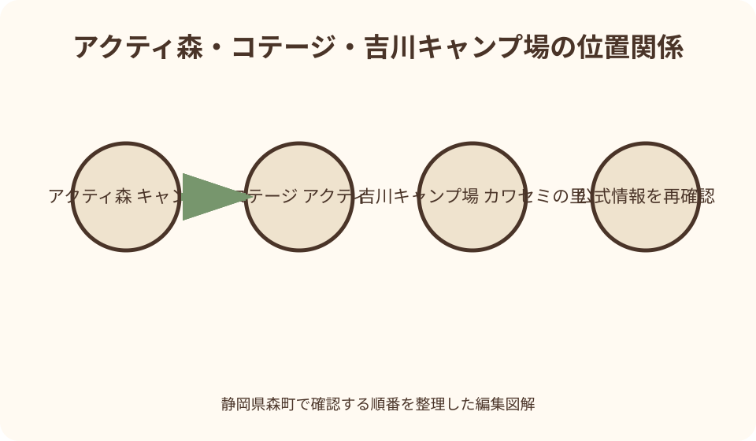
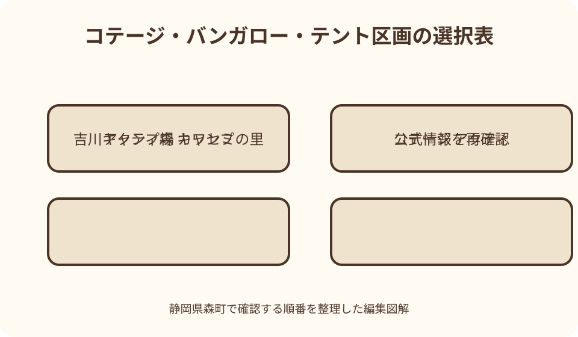

アクティ森｜最終確認 2026-08-10
静岡県森町・アクティ森周辺のキャンプとコテージ｜吉川沿いで泊まる準備
アクティ森周辺で建物内のキッチン・浴室・寝具を重視するなら隣接するコテージ・アクティ、持参テントや炊事棟を使うキャンプをしたいなら上流約10分の吉川キャンプ場カワセミの里を候補にします。二施設は所在地が異なり、アクティ森の日帰り体験とも受付が別です。予約時に宿泊日、人数、車、設備、BBQ、火気、ごみ、川の利用、キャンセル条件を0538-85-9800へ確認し、料金は最新表で確定してください。

最初に分ける——アクティ森、コテージ、キャンプ場は三つの目的地
アクティ森は問詰1115-1にある日帰り体験・飲食・物販の複合施設です。コテージ・アクティは問詰879-5にある隣接宿泊施設、吉川キャンプ場カワセミの里は亀久保85-2にある上流側の別施設です。名前の近さから同じ受付へ向かわず、予約票の施設名と住所をナビへ登録します。
コテージとキャンプ場は公式サイト上で同じ電話0538-85-9800を予約窓口としていますが、アクティ森の日帰り体験は別運営・別電話です。宿泊を予約しただけで陶芸やマウンテンバイク等の枠が付くとは限りません。体験はアクティ森へ別に確認し、二つの予約時刻を一枚の行程表へまとめます。
観光協会は、コテージからさらに山へ進んだ太田川ダム手前に吉川キャンプ場があると説明しています。公式アクセスではアクティ森からキャンプ場まで車で約10分です。徒歩移動や荷物運搬を前提にせず、夜間や悪天候でも往復するのか、先に必要品を運ぶのかを決めます。
出発前には、予約確認メールまたは電話記録、施設名、住所、チェックイン時間、緊急連絡先を同行者全員へ共有します。観光協会ページに住所をまとめて載せる箇所があっても、現行運営者のアクセスページにある個別住所を優先し、地図上のピンを目視します。
コテージを選ぶ——室内調理、浴室、寝具を使いたい家族向け
森町公式は、コテージ・アクティを4棟8室とし、各室に和室、2階洋室、ダイニングキッチン、バス、トイレがあると案内しています。公式設備表には冷蔵庫、電子レンジ、炊飯器、ガス台、調理器具、食器、エアコン、寝具等が掲載されていますが、故障・更新・数量を予約時に再確認します。
建物内で調理できることは、食材と調味料が用意されている意味ではありません。設備表を見て、包丁や鍋の有無だけでなく、必要な調味料、キッチンペーパー、保存容器を自分たちで用意します。油、氷、飲料水の販売を期待せず、現地で借りられる物と持参物を分けます。
公式設備表は歯ブラシ等の洗面用具、タオル、パジャマを備え付けないと記載しています。宿泊人数分を個別袋へまとめ、子どもの予備着替えと常用薬を加えます。受付販売品があるとしても在庫を保証できないため、自宅から必要数を持参します。
階段を使う2階洋室がある構成なので、幼児、高齢者、歩行に配慮が必要な人は寝る場所と夜間トイレ動線を予約前に相談します。最大人数だけで部屋を選ばず、誰がどの寝具を使い、子どもが階段へ近づかないようどう配置するかまで家族で決めます。
キャンプ場を選ぶ——テント区画、バンガロー、共用設備を比較する
吉川キャンプ場の運営者公式は、バンガロー5棟、テントエリア13区画、温水シャワー3室、トイレ棟、炊事棟、管理棟、学習棟を案内しています。テントは持ち込みのみで常設テントはないと明記されるため、テント泊を選ぶ人は幕体、ペグ、寝具を一式持参します。
公式掲載のテント区画は1区画4メートル四方程度です。大型テント、タープ、車横付けを当然とせず、予約時に実寸、張れる物の数、駐車位置、地面の状態を確認します。区画外へ張り綱を出したり、通路を塞いだりしないよう、自分の装備寸法を事前に測ります。
バンガローは4人用寝具、バス・トイレ、Wi-Fiを備えるとの掲載がありますが、調理設備がコテージと同じとは書かれていません。食事をどこで作るか、炊事棟を使うか、室内へ火気や調理器具を持ち込めるかを確認し、コテージ設備一覧をバンガローへ流用しません。
学習棟は雨天のBBQにも利用できると公式に案内されていますが、自由利用や予約不要とは限りません。利用枠、団体優先、料金、机・椅子、火気範囲を聞きます。雨が降ってから場所を確保するのではなく、悪天候案として予約段階で相談します。

予約時に聞く十項目——料金より先に利用単位を確定する
予約では、施設名、宿泊日、人数内訳、部屋・棟・区画数、車台数、チェックイン、チェックアウト、BBQ、レンタル、支払方法を順に確認します。大人、子ども、幼児の区分が料金や定員へどう反映されるかを聞き、人数だけで自己計算しません。
公式には空室状況ページと問い合わせフォームがありますが、表示が空いていても予約確定画面とは限りません。返信または電話で確定の連絡を受け、予約番号、施設名、合計条件を保存します。コテージの空室をキャンプ場の空きと読み替えません。
料金表は2026年8月10日に公式で確認できても、繁忙期、環境美化協力金、施設利用料、レンタル、シャワー等の追加条件があり得ます。本記事では固定金額を示さず、予約日向けの税込総額、現地追加、キャンセル料を運営者へ確認します。
変更期限も大切です。人数、区画、到着時刻をいつまで変更できるか、無連絡遅刻、荒天、道路通行止め、体調不良の扱いを聞きます。キャンセルは宿泊とアクティ森体験で別手続きになる可能性があるため、それぞれの連絡先へ個別に確認します。
BBQと火——器材貸出が食材・燃料・着火を含むとは限らない
観光協会はコテージとキャンプ場でBBQ器材の貸し出しが可能と案内していますが、器材一式の範囲は予約時に確認します。コンロ、網、鉄板、炭、着火剤、トング、耐熱手袋、消火用具が全部含まれるとは考えず、借りる品と持参する品を一覧にします。
火を使える場所、開始・消火時刻、直火禁止、焚き火台、薪・炭の持込、花火、喫煙は施設ごとの規則へ従います。コテージのバルコニーやキャンプ区画で自由に火を使えるとは断定しません。風が強い日は許可されていても中止を判断し、係員へ相談します。
消火は炎が見えなくなった時点で終わりではありません。炭と灰をどこへ処理するか、完全に冷ます方法、消火器や水の位置を開始前に確認します。残った炭を土へ埋めず、施設指定の回収場所へ運び、子どもを熱源へ近づけません。
食材は肉、野菜、加熱済み品を別に保管し、生肉用トングを食事用へ使い回しません。冷蔵庫があるコテージと、共用設備中心のキャンプ場で温度管理は異なります。クーラーボックスを準備し、食材を長時間車内へ放置しません。
ごみと片付け——捨てられる前提をやめ、分別表を到着時に受け取る
宿泊施設では、ごみを施設が回収するか、分別して指定場所へ出すか、全量持ち帰るかが異なります。予約時に可燃、缶、瓶、ペットボトル、生ごみ、炭、壊れた道具を分けて聞き、家庭の分別方法をそのまま適用しません。
到着時に分別表と袋の指定を確認し、調理前から容器を分けます。最後に一袋へ混ぜてから分け直すと、油や生ごみで作業が難しくなります。子どもにも色や表示で担当を決め、夜間に暗い集積場所へ一人で行かせません。
食べ残しを川や林へ置かず、野生動物が来ないよう密閉します。生ごみを焚き火で燃やす、残飯を土へ埋める、油を炊事棟へ流す行為はしません。廃油の処理を事前に考え、揚げ物など大量の油が出る料理を避ける案も持ちます。
チェックアウト前は、寝具、食器、冷蔵庫、火気、忘れ物、ごみ、施錠を役割分担します。施設が清掃する場合でも、使った物を元の場所へ戻し、破損や汚れは隠さず受付へ伝えます。退室時刻から逆算し、朝食後に慌てないよう夜のうちに荷物をまとめます。

夜間の過ごし方——静かな時間、照明、緊急連絡を到着前に確認する
山里の夜は市街地より暗く、音も遠くへ届きます。消灯・静粛時間、車の出入り、音楽、発電機、屋外会話の決まりを受付で確認します。家族だけの貸切感覚で声や照明を広げず、隣の利用者と地域住民の休息を優先します。
子どものトイレ動線は明るいうちに一緒に歩きます。キャンプ場ではテントから共用トイレまでの足元、段差、雨天時の滑りを確認し、手持ちライトを各大人へ配ります。首へ絡む長いストラップを幼児へ付けず、一人で移動させません。
夜間の管理人所在、緊急連絡、最寄りの医療機関、救急車を呼ぶ際の住所を紙にも残します。携帯電波やWi-Fiがあると掲載されても、停電や端末不調に備えます。持病薬、保険証情報、応急手当用品は車内ではなくすぐ取れる場所へ置きます。
星空や川音を楽しむために照明を消す場合も、河川、道路、斜面へ歩き出しません。飲酒後の火気、運転、川辺移動を避け、夜の自然観察は宿泊区画周辺の安全な範囲に限定します。写真撮影で私有地や他の棟へ入らないようにします。
吉川と天候——宿泊者でも川へ入れる条件は別に確認する
吉川キャンプ場公式は裏手の吉川で水遊びが可能と紹介していますが、いつでも安全に入れる意味ではありません。前日から上流の雨、当日の警報、水位、濁りを確認し、管理者が中止または立入禁止とした場合は従います。宿泊予約が川利用の保証になるとは考えません。
増水、濁り、枝の流下、雷鳴、急な冷風があれば水際へ近づきません。キャンプ場が晴れていても上流雨で流れが変わるため、到着時と翌朝の二回、管理者へ利用範囲を聞きます。子どもだけで川へ行かせず、大人の水辺担当を明確にします。
台風、大雨、積雪、凍結、土砂災害のおそれは、川だけでなく山道とバス運行へ影響します。キャンセル条件を確認した上で、危険が見込まれる日は施設へ連絡し、無理に到着を目指しません。夜間の天候悪化時に避難する建物と経路を受付で聞きます。
川辺で石を積む、魚を捕る、洗剤で食器を洗う、食べ物を冷やす行為をしません。炊事は指定設備、水遊びは指定範囲、観察は生き物へ触れない方法へ分けます。自然に近い宿泊ほど、施設の境界と河川の決まりを丁寧に守ります。
買い出しを組む——山里の市を唯一の食材供給先にしない
観光協会は、アクティ森敷地内の山里の市で季節の野菜、加工品、弁当、菓子等を扱うと紹介しています。ただし営業日は水曜休み、営業時間の掲載もありますが、品物は季節と入荷で変わります。夕食材料一式が必ずそろう場所とは考えません。
基本の食材、水、調味料、朝食は町なかで確保し、山里の市は当日並ぶ地域産品を追加する場所として位置づけます。訪問前に営業と在庫の傾向を電話で聞き、閉店時刻より十分前に寄ります。コテージやキャンプ場へ到着後に買い忘れへ気づいて往復しないよう一覧を作ります。
冷蔵品と常温品を分け、キャンプ場へ向かう車内時間を含めて保冷します。コテージには冷蔵庫の掲載がありますが容量を推測せず、大人数ならクーラーボックスも用意します。氷や保冷剤を現地で買えることを前提にしません。
アレルギーや乳幼児食が必要な家族は、代替しにくい食品を自宅から持参します。地域野菜を選ぶ場合も、調理器具、下処理、加熱時間を考え、夜遅くまで調理しない献立にします。余った食材を置いて帰らず、持ち帰れる量だけを買います。
公共交通と車——アクティ森下車後の宿泊地移動を別に作る
運営者公式は、遠州森駅から予約制のバスでアクティ森下車と案内しています。2026年の運行日、予約期限、乗降場所、荷物制限は0538-85-9800へ確認し、一般路線バスと同じ使い方だと決めません。テント、クーラーボックス、幼児用品を持てるかも相談します。
コテージはアクティ森隣接でも、バス停から部屋までの荷物運搬と雨天動線があります。吉川キャンプ場はさらに上流の別住所で、公式アクセスは車を前提に所要を示しています。公共交通だけでキャンプ場へ到達できるか、送迎の有無を予約時に確定します。
車で向かう場合、アクティ森、コテージ、キャンプ場の三地点を保存し、最後の分岐を明るいうちに通ります。夜間到着を避け、チェックイン時刻を過ぎそうなら安全な場所から連絡します。狭い道で無理に転回せず、運営者の推奨経路を聞きます。
運転者はBBQで飲酒せず、翌朝も睡眠と体調を確認します。複数台で来る場合は駐車可能台数と区画を確認し、路上や他施設へ無断駐車しません。日帰り体験へ移動する車と買い出し車を分けるなら、誰が子どもと荷物を担当するか決めます。
日帰り体験と接続する——チェックイン前後の空白を埋める
コテージ公式はチェックインを午後、キャンプ場も宿泊利用の開始時刻を案内しています。到着前にアクティ森の体験へ参加するなら、濡れ物、陶芸作品受付、昼食、宿泊受付の順を一続きにします。体験終了からチェックインまで荷物をどこへ置けるかを両施設へ確認します。
チェックアウト後に体験する場合、宿泊地へ荷物を残せるとは限りません。車へ積み、食品と濡れ物の温度管理をした上でアクティ森へ移ります。大型荷物を体験工房へ持ち込まず、駐車場から受付まで必要な物だけを小袋へ分けます。
体験予約と宿泊予約は連動しないため、一方を変更したらもう一方の時刻も見直します。雨で屋外体験が中止になってもチェックインを早められるとは限らず、宿泊キャンセルにも自動反映されません。それぞれの窓口へ連絡し、空いた時間の過ごし方を相談します。
家族の基本案は、午前に短い体験、昼食、買い出し、チェックイン、夕方までにBBQ準備です。夜へ予定を詰めず、火の片付けと入浴を静粛時間前に終えます。翌朝は朝食、清掃、チェックアウトを優先し、川遊びは水位と時間に余裕がある場合だけにします。
良い点——屋内泊とテント泊を家族の経験に合わせて選べる
アクティ森周辺の宿泊の良い点は、キッチン・浴室付きのコテージ、バンガロー、持参テント区画という異なる段階から選べることです。初めての家族は建物内の設備を重視し、経験者は共用炊事棟を使う区画を選ぶなど、装備と年齢に合わせられます。
日中はアクティ森で創作や自然体験、夕方から吉川沿いで宿泊という組み合わせもできます。移動と受付を別に設計すれば、一日で森町の手仕事と山里の環境へ触れられます。宿泊特典として体験が付くわけではないため、双方を明確に予約することが前提です。
コテージで自炊し、山里の市で当日見つけた野菜を一品加える方法は、全食材を現地調達するより安定します。地域産品を生かしつつ、子どもが食べられる主食やアレルギー対応品を確保できます。季節品の入荷を体験談のように保証しません。
キャンプ場の炊事棟、シャワー、学習棟といった掲載設備は、初めての準備項目を具体化する助けになります。ただし設備があることと、いつでも自由に使えることは別です。予約時に利用時間と貸切を確かめることで、良さを現実の行程へ落とし込めます。
注文したい点——三施設の住所・受付・規則を一枚で比較したい
利用者として注文したい点は、アクティ森、コテージ・アクティ、吉川キャンプ場を一枚の地図に載せ、住所、受付電話、チェックイン、駐車、移動時間を色分けする案内です。名称が似ていても別目的地だと出発前に分かれば、誤った受付へ行くことを減らせます。
宿泊ページには、コテージ室内、バンガロー、テント区画の設備を同じ項目で比較する表が必要です。調理、浴室、トイレ、寝具、Wi-Fi、車横付け、電源、ペットを未記載のまま推測せず、可否と更新日を並べてほしいところです。
BBQについては、借りられる器材、燃料、食材販売、火気場所、消火、炭・灰、ごみを一つの利用規則へまとめると準備しやすくなります。雨天時の学習棟利用も、予約要否と利用できる組数が示されれば、当日の交渉を減らせます。
キャンセル案内には、通常、繁忙期、台風、警報、道路通行止め、体調不良で条件がどう異なるかを明記してほしいところです。利用者も悪天候時の無料取消を当然とせず、予約前に規則を読み、宿泊と体験を別々に手続きします。
対案・結論——設備ではなく、夜をどう過ごすかで宿を選ぶ
室内で調理し浴室と寝具を使いたいならコテージ、建物泊でもキャンプ場設備へ近づきたいならバンガロー、自分のテントと共用炊事棟を使いたいなら区画を第一候補にします。各施設の現行設備、定員、価格、空室を0538-85-9800で確定します。
予約時は、人数、車、到着、BBQ、火、ごみ、夜間、川、雨、キャンセルを一度に確認します。食材は基本分を町なかで確保し、山里の市は季節品の追加候補にします。公共交通利用者はアクティ森下車後の宿泊地移動まで予約します。
日帰り体験を組み合わせるなら、宿泊とは別にアクティ森へ予約し、体験、昼食、買い出し、チェックインの順を作ります。変更時は両窓口へ連絡し、川や屋外体験が中止でも宿へ早く入れるとは考えません。
料金の安さだけで選ばず、幼児の階段、夜間トイレ、調理、雨天、荷物量を比べます。吉川沿いで泊まる目的は予定を増やすことではなく、明るいうちに準備を終え、火を消し、静かな夜を安全に過ごすことです。
大石の視点——予約票へ火とごみの欄を自分で足す
私なら予約内容を日付と人数だけで保存せず、火を使う場所、炭の処理、ごみ袋、静粛時間、夜間連絡という五つの空欄を作ります。電話で一つずつ埋めると、現地で「器材を借りたから炭も捨てられるだろう」という思い込みを減らせます。
設備写真は便利ですが、写っている物が自分の予約日に使える保証ではありません。公式掲載、電話回答、到着時説明を三段階で分け、違いがあれば最新の現地案内を優先します。泊まっていない経験を快適さの評価として書かず、確認できた条件を残します。
子どもには、テントを立てることだけでなく、食材を冷やす、ごみを分ける、炭が冷えたか大人と確認する、夜は声を小さくする役割を渡します。自然の中で自由になるのではなく、周囲と設備へ責任を持つことがキャンプの中心だと伝えます。
翌朝に川へ入れるかは、宿泊前の期待では決めません。雨、水位、時間、体調を見て、入らず帰る選択を残します。予定を一つ減らしても、忘れ物なく退室し、運転者が休めていれば、アクティ森周辺での宿泊は次回へつながります。
公式情報・確認先
掲載内容は次の一次情報を基礎に整理しました。営業、料金、催し、交通は変わるため、出発前または手続き前にリンク先で最新情報を確認してください。
- 静岡県森町 コテージ・アクティ（静岡県森町、2026-08-10確認）
- 静岡県森町 森町体験の里 アクティ森（静岡県森町、2026-08-10確認）
- 静岡県森町 アクティ森リニューアルオープン（静岡県森町、2026-08-10確認）
- 静岡県森町観光協会 コテージ・キャンプ場・山里の市（静岡県森町観光協会、2026-08-10確認）
- コテージ・アクティ公式 利用案内（cottage-acty.net、2026-08-10確認）
- コテージ・アクティ公式 設備一覧（cottage-acty.net、2026-08-10確認）
- 吉川キャンプ場公式 施設紹介（cottage-acty.net、2026-08-10確認）
- 吉川キャンプ場公式 利用案内（cottage-acty.net、2026-08-10確認）
- コテージ・アクティ公式 アクセス（cottage-acty.net、2026-08-10確認）